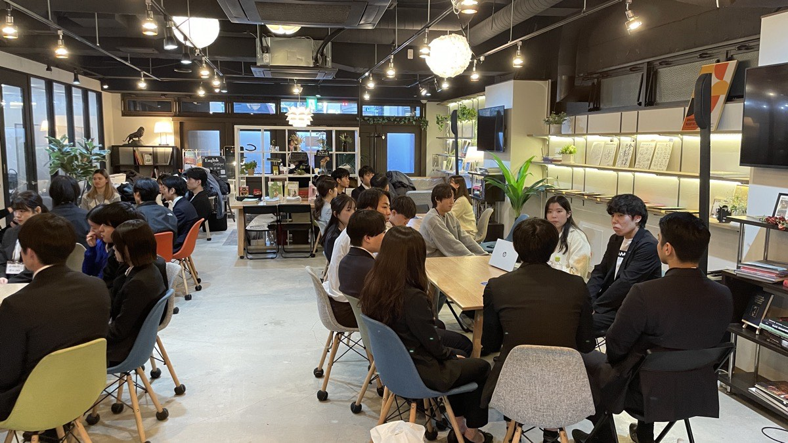

CHALLENGES
こんな採用課題に。
01応募数は集まるが、本気度の高い学生に出会えない
02説明会では自社の魅力が学生に伝わりきらない
03上位校・意欲層へのリーチ手段が限られている
WHAT WE DO
提供内容
企画から集客、当日運営、開催後のレポートまで一気通貫で伴走します。
01
イベント企画・設計
目的・ターゲットに合わせて、出会いの形式と体験を設計します。
02
学生集客
意欲の高い学生・上位校層を中心に、参加者を集めます。
03
当日運営・進行
少人数マッチング形式の進行・ファシリテーションを担います。
04
マッチング設計
企業と学生が深く話せる組み合わせ・導線を設計します。
05
開催後レポート
参加者の反応・満足度を可視化し、次の打ち手につなげます。
06
継続的な改善
毎回の結果をもとに、出会いの質を磨き続けます。
TRACK RECORD
共催イベント「THE 就活」の実績
94%
参加学生の「大満足・満足」
32名
参加学生数
91%
早慶＋MARCH比率
4社
参加企業数
※ 2024年12月14日開催「THE 就活」（株式会社CAREER FOCUS・株式会社Nodako 共催）の実績。
FLOW
進め方
STEP 1
ヒアリング
採用目標・求める学生像を整理します。
STEP 2
企画・設計
イベント形式と集客プランを設計します。
STEP 3
集客・開催
学生を集め、当日の運営まで担います。
STEP 4
レポート
結果を可視化し、次回へ改善します。